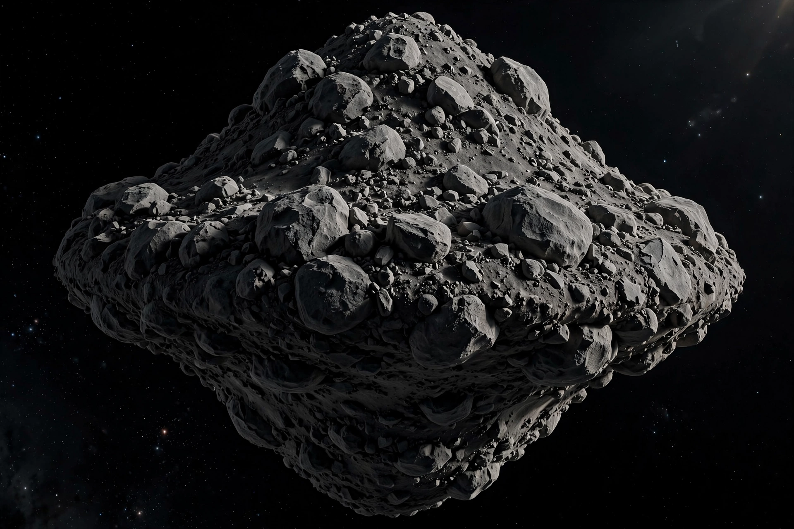

| 101955 Bennu | |
|---|---|
 | |
| Discovered | 11 September 1999 (LINEAR) |
| Mean diameter | ~490 m (1,610 ft) |
| Rotation period | 4.296 hours |
| Classification | Apollo asteroid; potentially hazardous object |
| Spectral type | B-type (carbonaceous) |
101955 Bennu (provisional designation 1999 RQ36) is a carbonaceous near-Earth asteroid in the Apollo group, discovered by the Lincoln Near-Earth Asteroid Research (LINEAR) project on 11 September 1999. It is a potentially hazardous object, and as of recent assessments it has among the highest cumulative impact probabilities of any known near-Earth object, with a small chance of striking Earth in the late 22nd century.
Bennu was the target of NASA's OSIRIS-REx mission, which arrived at the asteroid in December 2018, mapped its surface in detail, and collected a sample of regolith in October 2020. The sample capsule returned to Earth on 24 September 2023, delivering at least 121.6 grams of material — the largest asteroid sample return to date.
Bennu has a roughly spheroidal, "spinning top" shape with a mean diameter of about 490 metres and an equatorial ridge. Observations by OSIRIS-REx showed it to be a rubble pile: a loose aggregate of rocks and boulders held together by weak gravity, rather than a single solid body. Surprisingly, its surface was covered in large boulders rather than the smooth "beaches" of fine regolith expected from radar data, and the spacecraft observed particles being ejected from the surface into space.
The name Bennu was suggested by nine-year-old Michael Puzio of North Carolina, winner of a 2013 "Name That Asteroid!" contest run with the mission team. Bennu is an ancient Egyptian mythological bird associated with the Sun, creation, and rebirth; Puzio thought the spacecraft's sample arm and the asteroid's shape resembled the bird, often depicted as a heron.
Precise tracking, refined by OSIRIS-REx measurements of the Yarkovsky effect, indicates a cumulative impact probability of roughly 1 in 1,750 between 2178 and 2290, with the most significant single encounter on 24 September 2182. The expected effects of such an impact would be regional rather than globally catastrophic.